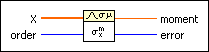
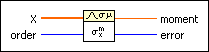

Moment about Mean VI
Owning Palette: Probability & Statistics VIs
Requires: Full Development System
Computes the moment about the mean of the input sequence X using the specified order, m.

 Add to the block diagram Add to the block diagram |
 Find on the palette Find on the palette |
Owning Palette: Probability & Statistics VIs
Requires: Full Development System
Computes the moment about the mean of the input sequence X using the specified order, m.

| Add to the block diagram |
Find on the palette |
 |
X is the input sequence. If X is empty, moment is NaN. |
 |
order must be greater than 0. If order is less than or equal to 0, the VI sets moment to NaN and returns an error. The default is 2. |
 |
moment, which is calculated using the specified order, is the moment about the mean of the input sequence X. |
 |
error returns any error or warning from the VI. You can wire error to the Error Cluster From Error Code VI to convert the error code or warning into an error cluster. |
The VI computes the mth-order moment using the following equation.
where  xm is the mth-order moment, and n is the number of elements in the input sequence X.
xm is the mth-order moment, and n is the number of elements in the input sequence X.
Refer to the following VIs for examples of using the Moment about Mean VI:
 Open example Find related examples
Open example Find related examples
Open example Find related examples